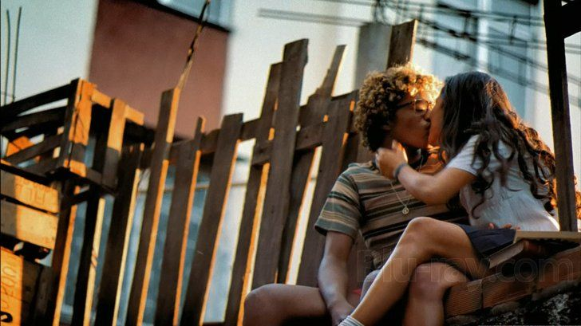
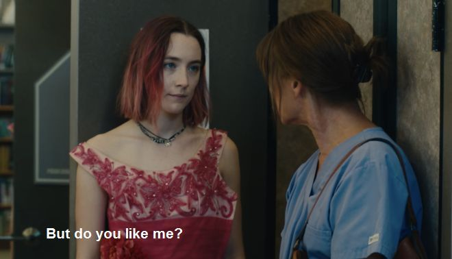
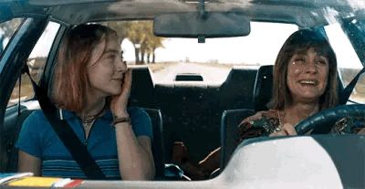
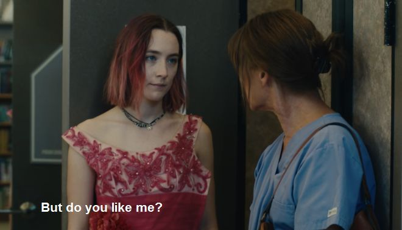
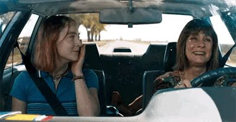
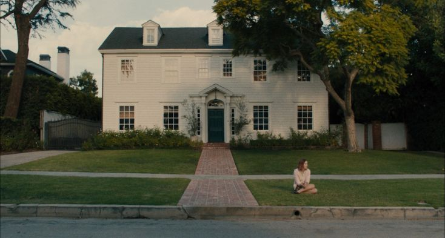
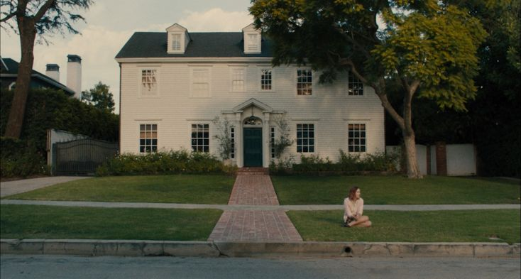

City of God
The city that breeds violence, and the kids who fight to survive

City of God is a riveting movie centered around gangs and ganglife, violence, resistance to such a life and basically the story, (beginning and end) of how 5 young men got into it the first place. Everything about it was so perfect. The way we are introduced to the characters, the way we follow through with them, panning back and forth, the narration, the tension that we feel through the screen! Perfection.
Power:
This movie highlights the intoxicating effect of power. I think the most obvious character
that displays this is Li'l Dice. The obsession with power that this kid had just drew
me in. I was highly interested in seeing just how far he will go for what he wants. Outside of a gang
life persepective, we see later on how insecure he actually feels and how he NEEDS
power, or rather taking other peoples power to soothe his fragile ego. The constant struggle for
power was the driving force behind so many problems in this film.

Love:
This is arguably not a strong theme but I do want to talk about it. The relationship between
these two characters (I feel) displayed the naiviety of young relationships. They were
both so in love but the relationship could not have worked unless Shaggy let go of his
criminal lifestyle and they basically ran away together(I am a SUCKERfor a "lets run away"
trope. Unfortunately what happened, happened but I really wish they made it) I can't really
find pictures of a couple that I really want to talk about because they dont really exist and they more
so overlap with themes of power? But if you know you know.

I think this relationship displayed two things: The desire to have something that you cannot have, and the beauty of what you can find when you allow yourself to not date "your type". I think he couldn't really claim to have loved her he barely knew her but in the same breath, I think they could have been something special. Her next relationship was the same thing really. I also think he wasn't really ready for a mature relationship, he wanted it but he wasn't ready for it. I also don't blame her for not having the patience for him.
.jpeg)

I love how their relationship displayed how love has the power to absolutely change you. I don't think that men will change for you I just think, the power of the love they have for you,can change them. There's a quote actually: "Love is the ability to deny thyself and be engulfed in flames". I wasn't sure what to make of that quote but thinking intently about their relationship, I might say I agree...
Brotherhood/Loyalty:
The balance between these two was beautiful to witness. Benny was the only person
who could speak to Lil Ze and in turn I'd like to believe Lil Ze made sure that Benny is always
safe. Looking back? I realise that Benny was really just in this life for the money. He wasn't
into the drugs and the violence perse, whereas Lil Ze was consumed by the power that came with it
(being a ruthless gang leader). I think it was sad how Lil Ze clearly struggled with expressing
emotions. I think he was scared of being lonely (romantically and generally being without Benny)
It was a beautiful thing to witness.
.jpeg)
.jpeg)
.jpeg)

To finish, there are so many characters to talk about but this would be way too long and I would definitely spoil the movie. I am super into foreign films though so do expect more.


2.jpeg)
 



 Movie Online 1080pxa.jpeg) 
